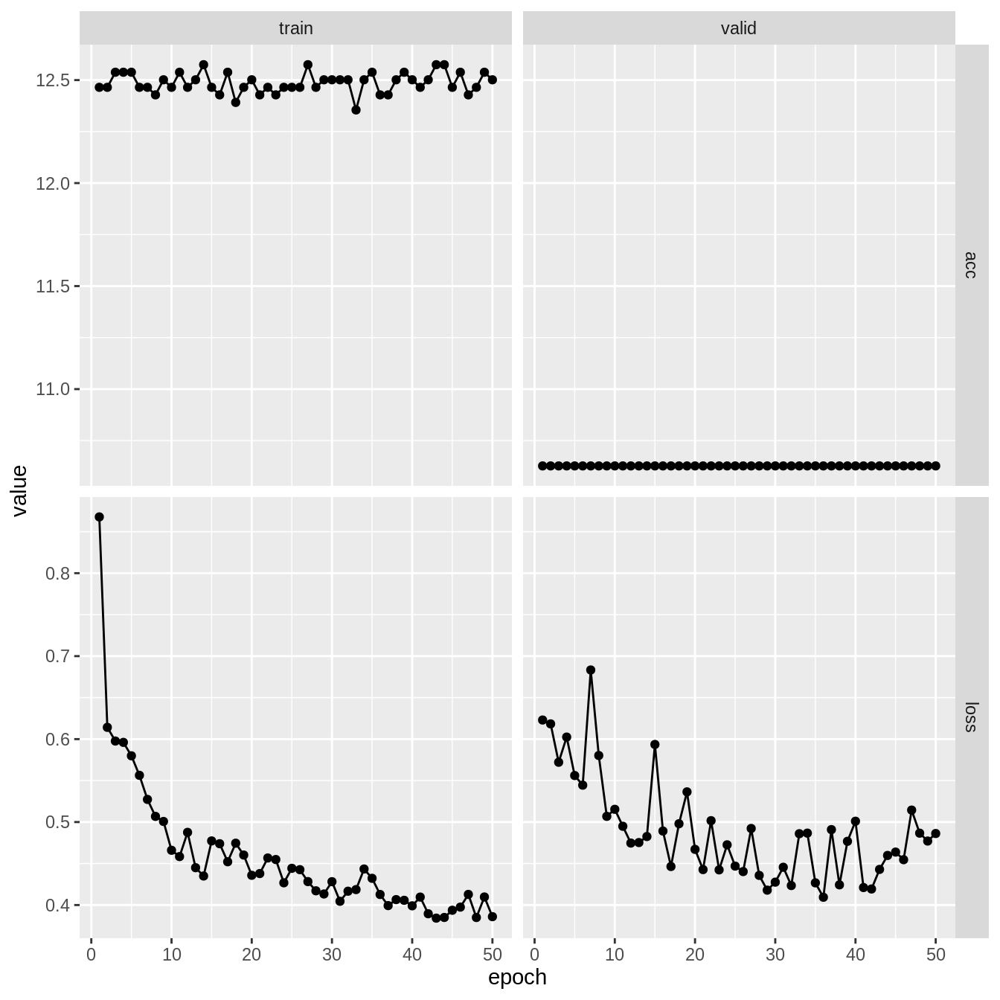
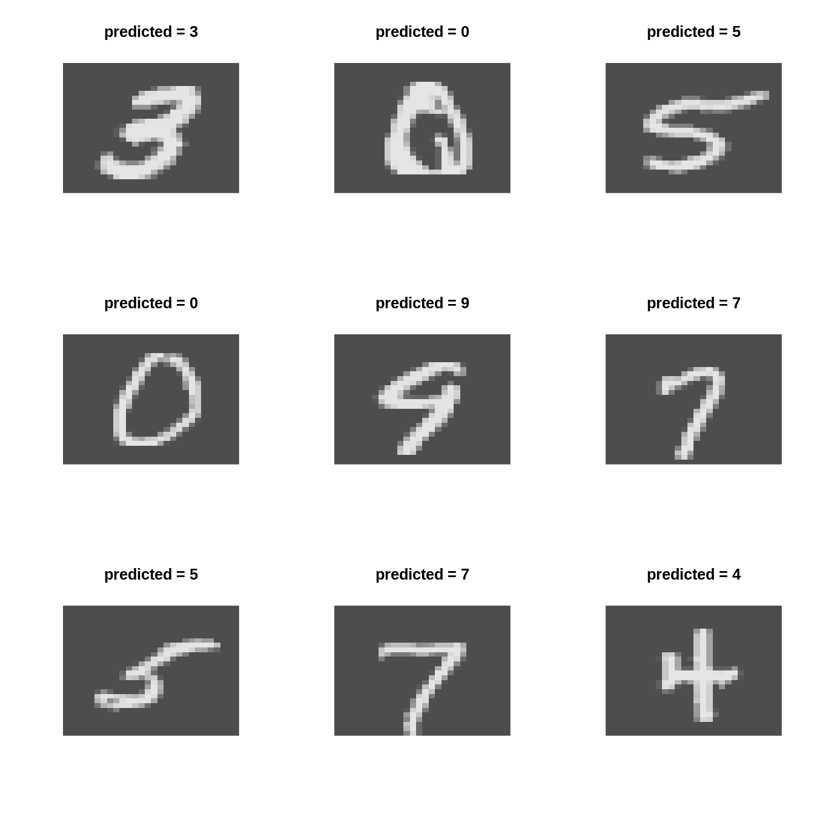

dir <- "~/work/courses/stat380/weeks/week-12/"
# renv::activate(dir)Packages we will require this week
packages <- c(
# Old packages
"ISLR2",
"dplyr",
"tidyr",
"readr",
"purrr",
"repr",
"tidyverse",
"kableExtra",
"IRdisplay",
# NEW
"torch",
"torchvision",
"luz"
)
# renv::install(packages)
sapply(packages, require, character.only=TRUE)Tue, Apr 12
Agenda:
- Real-world neural network classification
- Dataloaders
- Torch for image classification
Titanic
url <- "https://web.stanford.edu/class/archive/cs/cs109/cs109.1166/stuff/titanic.csv"
df <- read_csv(url) %>%
mutate_if(\(x) is.character(x), as.factor) %>%
mutate(y = Survived) %>%
select(-c(Name, Survived)) %>%
(\(x) {
names(x) <- tolower(names(x))
x
})Rows: 887 Columns: 8
── Column specification ────────────────────────────────────────────────────────
Delimiter: ","
chr (2): Name, Sex
dbl (6): Survived, Pclass, Age, Siblings/Spouses Aboard, Parents/Children Ab...
ℹ Use `spec()` to retrieve the full column specification for this data.
ℹ Specify the column types or set `show_col_types = FALSE` to quiet this message.df %>% head# A tibble: 6 × 7
pclass sex age `siblings/spouses aboard` parents/children a…¹ fare y
<dbl> <fct> <dbl> <dbl> <dbl> <dbl> <dbl>
1 3 male 22 1 0 7.25 0
2 1 female 38 1 0 71.3 1
3 3 female 26 0 0 7.92 1
4 1 female 35 1 0 53.1 1
5 3 male 35 0 0 8.05 0
6 3 male 27 0 0 8.46 0
# … with abbreviated variable name ¹`parents/children aboard`Breast Cancer Prediction
# url <- "https://archive.ics.uci.edu/ml/machine-learning-databases/breast-cancer-wisconsin/wdbc.data"
# col_names <- c("id", "diagnosis", paste0("feat", 1:30))
# df <- read_csv(
# url, col_names, col_types = cols()
# ) %>%
# select(-id) %>%
# mutate(y = ifelse(diagnosis == "M", 1, 0)) %>%
# select(-diagnosis)
# df %>% headTrain/Test Split
k <- 5
test_ind <- sample(
1:nrow(df),
floor(nrow(df) / k),
replace=FALSE
)df_train <- df[-test_ind, ]
df_test <- df[test_ind, ]
nrow(df_train) + nrow(df_test) == nrow(df)[1] TRUEBenchmark with Logistic Regression
fit_glm <- glm(
y ~ .,
df_train %>% mutate_at("y", factor),
family = binomial()
)
glm_test <- predict(
fit_glm,
df_test,
output = "response"
)
glm_preds <- ifelse(glm_test > 0.5, 1, 0)
table(glm_preds, df_test$y)
glm_preds 0 1
0 103 21
1 11 42Neural Net Model
NNet <- nn_module(
initialize = function(p, q1, q2, q3) {
self$hidden1 <- nn_linear(p, q1)
self$hidden2 <- nn_linear(q1, q2)
self$hidden3 <- nn_linear(q2, q3)
self$output <- nn_linear(q3, 1)
self$activation <- nn_relu()
self$sigmoid <- nn_sigmoid()
},
forward = function(x) {
x %>%
self$hidden1() %>% self$activation() %>%
self$hidden2() %>% self$activation() %>%
self$hidden3() %>% self$activation() %>%
self$output() %>% self$sigmoid()
}
)Fit using Luz
M <- model.matrix(y ~ 0 + ., data = df_train)fit_nn <- NNet %>%
#
# Setup the model
#
setup(
loss = nn_bce_loss(),
optimizer = optim_adam,
metrics = list(
luz_metric_accuracy()
)
) %>%
#
# Set the hyperparameters
#
set_hparams(p=ncol(M), q1=256, q2=128, q3=64) %>%
set_opt_hparams(lr=0.005) %>%
#
# Fit the model
#
fit(
data = list(
model.matrix(y ~ 0 + ., data = df_train),
df_train %>% select(y) %>% as.matrix
),
valid_data = list(
model.matrix(y ~ 0 + ., data = df_test),
df_test %>% select(y) %>% as.matrix
),
epochs = 50,
verbose = TRUE
)Epoch 1/50
Train metrics: Loss: 0.8678 - Acc: 12.4648
Valid metrics: Loss: 0.623 - Acc: 10.6271
Epoch 2/50
Train metrics: Loss: 0.6142 - Acc: 12.4648
Valid metrics: Loss: 0.6183 - Acc: 10.6271
Epoch 3/50
Train metrics: Loss: 0.5977 - Acc: 12.538
Valid metrics: Loss: 0.5721 - Acc: 10.6271
Epoch 4/50
Train metrics: Loss: 0.5961 - Acc: 12.538
Valid metrics: Loss: 0.6024 - Acc: 10.6271
Epoch 5/50
Train metrics: Loss: 0.5799 - Acc: 12.538
Valid metrics: Loss: 0.5561 - Acc: 10.6271
Epoch 6/50
Train metrics: Loss: 0.5563 - Acc: 12.4648
Valid metrics: Loss: 0.5445 - Acc: 10.6271
Epoch 7/50
Train metrics: Loss: 0.5273 - Acc: 12.4648
Valid metrics: Loss: 0.6833 - Acc: 10.6271
Epoch 8/50
Train metrics: Loss: 0.5068 - Acc: 12.4282
Valid metrics: Loss: 0.5802 - Acc: 10.6271
Epoch 9/50
Train metrics: Loss: 0.5007 - Acc: 12.5014
Valid metrics: Loss: 0.5069 - Acc: 10.6271
Epoch 10/50
Train metrics: Loss: 0.466 - Acc: 12.4648
Valid metrics: Loss: 0.5154 - Acc: 10.6271
Epoch 11/50
Train metrics: Loss: 0.4584 - Acc: 12.538
Valid metrics: Loss: 0.4949 - Acc: 10.6271
Epoch 12/50
Train metrics: Loss: 0.4876 - Acc: 12.4648
Valid metrics: Loss: 0.4747 - Acc: 10.6271
Epoch 13/50
Train metrics: Loss: 0.445 - Acc: 12.5014
Valid metrics: Loss: 0.4753 - Acc: 10.6271
Epoch 14/50
Train metrics: Loss: 0.435 - Acc: 12.5746
Valid metrics: Loss: 0.4825 - Acc: 10.6271
Epoch 15/50
Train metrics: Loss: 0.4773 - Acc: 12.4648
Valid metrics: Loss: 0.5936 - Acc: 10.6271
Epoch 16/50
Train metrics: Loss: 0.4739 - Acc: 12.4282
Valid metrics: Loss: 0.4892 - Acc: 10.6271
Epoch 17/50
Train metrics: Loss: 0.4522 - Acc: 12.538
Valid metrics: Loss: 0.4464 - Acc: 10.6271
Epoch 18/50
Train metrics: Loss: 0.4745 - Acc: 12.3915
Valid metrics: Loss: 0.498 - Acc: 10.6271
Epoch 19/50
Train metrics: Loss: 0.4602 - Acc: 12.4648
Valid metrics: Loss: 0.5364 - Acc: 10.6271
Epoch 20/50
Train metrics: Loss: 0.4358 - Acc: 12.5014
Valid metrics: Loss: 0.4671 - Acc: 10.6271
Epoch 21/50
Train metrics: Loss: 0.4379 - Acc: 12.4282
Valid metrics: Loss: 0.4427 - Acc: 10.6271
Epoch 22/50
Train metrics: Loss: 0.4567 - Acc: 12.4648
Valid metrics: Loss: 0.5017 - Acc: 10.6271
Epoch 23/50
Train metrics: Loss: 0.4549 - Acc: 12.4282
Valid metrics: Loss: 0.4424 - Acc: 10.6271
Epoch 24/50
Train metrics: Loss: 0.4268 - Acc: 12.4648
Valid metrics: Loss: 0.4726 - Acc: 10.6271
Epoch 25/50
Train metrics: Loss: 0.4442 - Acc: 12.4648
Valid metrics: Loss: 0.4469 - Acc: 10.6271
Epoch 26/50
Train metrics: Loss: 0.4426 - Acc: 12.4648
Valid metrics: Loss: 0.4403 - Acc: 10.6271
Epoch 27/50
Train metrics: Loss: 0.4282 - Acc: 12.5746
Valid metrics: Loss: 0.4923 - Acc: 10.6271
Epoch 28/50
Train metrics: Loss: 0.4171 - Acc: 12.4648
Valid metrics: Loss: 0.4357 - Acc: 10.6271
Epoch 29/50
Train metrics: Loss: 0.4133 - Acc: 12.5014
Valid metrics: Loss: 0.4179 - Acc: 10.6271
Epoch 30/50
Train metrics: Loss: 0.4282 - Acc: 12.5014
Valid metrics: Loss: 0.4276 - Acc: 10.6271
Epoch 31/50
Train metrics: Loss: 0.4045 - Acc: 12.5014
Valid metrics: Loss: 0.4455 - Acc: 10.6271
Epoch 32/50
Train metrics: Loss: 0.4167 - Acc: 12.5014
Valid metrics: Loss: 0.4235 - Acc: 10.6271
Epoch 33/50
Train metrics: Loss: 0.4186 - Acc: 12.3549
Valid metrics: Loss: 0.486 - Acc: 10.6271
Epoch 34/50
Train metrics: Loss: 0.4434 - Acc: 12.5014
Valid metrics: Loss: 0.4867 - Acc: 10.6271
Epoch 35/50
Train metrics: Loss: 0.4322 - Acc: 12.538
Valid metrics: Loss: 0.4267 - Acc: 10.6271
Epoch 36/50
Train metrics: Loss: 0.4127 - Acc: 12.4282
Valid metrics: Loss: 0.4094 - Acc: 10.6271
Epoch 37/50
Train metrics: Loss: 0.3993 - Acc: 12.4282
Valid metrics: Loss: 0.4909 - Acc: 10.6271
Epoch 38/50
Train metrics: Loss: 0.4065 - Acc: 12.5014
Valid metrics: Loss: 0.4243 - Acc: 10.6271
Epoch 39/50
Train metrics: Loss: 0.4057 - Acc: 12.538
Valid metrics: Loss: 0.4768 - Acc: 10.6271
Epoch 40/50
Train metrics: Loss: 0.3991 - Acc: 12.5014
Valid metrics: Loss: 0.501 - Acc: 10.6271
Epoch 41/50
Train metrics: Loss: 0.4096 - Acc: 12.4648
Valid metrics: Loss: 0.4211 - Acc: 10.6271
Epoch 42/50
Train metrics: Loss: 0.3895 - Acc: 12.5014
Valid metrics: Loss: 0.4193 - Acc: 10.6271
Epoch 43/50
Train metrics: Loss: 0.3842 - Acc: 12.5746
Valid metrics: Loss: 0.4429 - Acc: 10.6271
Epoch 44/50
Train metrics: Loss: 0.385 - Acc: 12.5746
Valid metrics: Loss: 0.4598 - Acc: 10.6271
Epoch 45/50
Train metrics: Loss: 0.3937 - Acc: 12.4648
Valid metrics: Loss: 0.4638 - Acc: 10.6271
Epoch 46/50
Train metrics: Loss: 0.3975 - Acc: 12.538
Valid metrics: Loss: 0.4546 - Acc: 10.6271
Epoch 47/50
Train metrics: Loss: 0.4128 - Acc: 12.4282
Valid metrics: Loss: 0.5144 - Acc: 10.6271
Epoch 48/50
Train metrics: Loss: 0.385 - Acc: 12.4648
Valid metrics: Loss: 0.4866 - Acc: 10.6271
Epoch 49/50
Train metrics: Loss: 0.4097 - Acc: 12.538
Valid metrics: Loss: 0.4771 - Acc: 10.6271
Epoch 50/50
Train metrics: Loss: 0.386 - Acc: 12.5014
Valid metrics: Loss: 0.4862 - Acc: 10.6271plot(fit_nn)
nn_test <- predict(
fit_nn,
model.matrix(y ~ . - 1, data = df_test)
)
# nn_test
nn_preds <- ifelse(nn_test > 0.5, 1, 0)
table(nn_preds, df_test$y)
nn_preds 0 1
0 88 13
1 26 50mean(nn_preds == df_test$y)[1] 0.779661table(glm_preds, df_test$y)
glm_preds 0 1
0 103 21
1 11 42mean(glm_preds == df_test$y)[1] 0.819209DataLoaders
Dataloaders are a key component in the machine learning pipeline.
They handle loading and preprocessing data in a way that is efficient for training and evaluating models.
Dataloaders make it easy to work with large datasets by loading the data in smaller chunks (called batches) and applying transformations on-the-fly.
Why use Dataloaders?
Efficient memory management: loading data in smaller chunks reduces memory usage.
Parallelism: supports asynchronous data loading for faster processing.
Preprocessing: apply data transformations on-the-fly during training and evaluation.
Flexibility: easily switch between different datasets or preprocessing steps.
Standardization: consistent data format across various machine learning projects.
# ?dataloadertransform <- function(x) x %>%
torch_tensor() %>%
torch_flatten() %>%
torch_div(255)dir <- "./mnist"
train_ds <- mnist_dataset(
root = dir,
train = TRUE,
download = TRUE,
transform = transform
)
test_ds <- mnist_dataset(
root = dir,
train = FALSE,
download = TRUE,
transform = transform
)typeof(train_ds)[1] "environment"length(train_ds)[1] 60000train_ds$data[42000, ,] [,1] [,2] [,3] [,4] [,5] [,6] [,7] [,8] [,9] [,10] [,11] [,12] [,13]
[1,] 0 0 0 0 0 0 0 0 0 0 0 0 0
[2,] 0 0 0 0 0 0 0 0 0 0 0 0 0
[3,] 0 0 0 0 0 0 0 0 0 0 0 0 0
[4,] 0 0 0 0 0 0 0 0 0 0 0 0 0
[5,] 0 0 0 0 0 0 0 0 0 0 0 0 0
[6,] 0 0 0 0 0 0 0 0 0 0 0 0 0
[7,] 0 0 0 0 0 0 0 0 0 0 0 6 37
[8,] 0 0 0 0 0 0 0 0 0 0 125 160 252
[9,] 0 0 0 0 0 0 0 0 1 109 232 252 252
[10,] 0 0 0 0 0 0 0 0 125 252 252 252 252
[11,] 0 0 0 0 0 0 0 0 62 189 211 252 252
[12,] 0 0 0 0 0 0 0 21 206 252 190 252 168
[13,] 0 0 0 0 0 0 73 253 253 253 253 217 0
[14,] 0 0 0 0 0 0 115 252 252 252 148 30 0
[15,] 0 0 0 0 0 0 217 252 252 252 35 0 0
[16,] 0 0 0 0 0 0 217 252 252 252 35 0 0
[17,] 0 0 0 0 0 110 233 253 253 144 0 79 109
[18,] 0 0 0 0 0 253 252 252 252 237 217 242 252
[19,] 0 0 0 0 0 253 252 252 252 252 252 252 252
[20,] 0 0 0 0 0 170 252 252 252 252 252 252 252
[21,] 0 0 0 0 0 0 218 253 253 253 253 253 253
[22,] 0 0 0 0 0 0 72 231 252 252 252 252 252
[23,] 0 0 0 0 0 0 0 52 71 71 71 71 71
[24,] 0 0 0 0 0 0 0 0 0 0 0 0 0
[25,] 0 0 0 0 0 0 0 0 0 0 0 0 0
[26,] 0 0 0 0 0 0 0 0 0 0 0 0 0
[27,] 0 0 0 0 0 0 0 0 0 0 0 0 0
[28,] 0 0 0 0 0 0 0 0 0 0 0 0 0
[,14] [,15] [,16] [,17] [,18] [,19] [,20] [,21] [,22] [,23] [,24] [,25]
[1,] 0 0 0 0 0 0 0 0 0 0 0 0
[2,] 0 0 0 0 0 0 0 0 0 0 0 0
[3,] 0 0 0 0 0 0 0 0 0 0 0 0
[4,] 0 0 0 0 0 0 0 0 0 0 0 0
[5,] 0 0 0 0 0 0 0 0 0 0 0 0
[6,] 0 0 0 0 0 0 0 42 218 134 186 0
[7,] 182 98 51 0 0 0 27 221 253 252 221 16
[8,] 253 252 175 144 0 0 16 190 253 252 252 108
[9,] 253 252 252 252 0 0 0 0 109 252 236 62
[10,] 253 252 200 179 0 0 0 0 109 252 215 42
[11,] 237 91 20 0 0 0 0 21 212 252 241 221
[12,] 62 0 0 0 0 0 21 206 253 252 252 252
[13,] 0 0 0 0 0 32 212 253 255 253 253 108
[14,] 0 0 0 0 0 115 252 252 253 252 220 15
[15,] 0 0 27 120 182 242 252 252 253 252 112 0
[16,] 0 125 221 252 253 252 252 252 253 128 31 0
[17,] 255 253 253 253 255 253 253 253 208 20 0 0
[18,] 253 252 252 252 253 252 252 210 20 0 0 0
[19,] 253 252 252 252 217 215 112 31 0 0 0 0
[20,] 253 252 252 252 0 0 0 0 0 0 0 0
[21,] 255 253 175 62 0 0 0 0 0 0 0 0
[22,] 119 35 10 0 0 0 0 0 0 0 0 0
[23,] 0 0 0 0 0 0 0 0 0 0 0 0
[24,] 0 0 0 0 0 0 0 0 0 0 0 0
[25,] 0 0 0 0 0 0 0 0 0 0 0 0
[26,] 0 0 0 0 0 0 0 0 0 0 0 0
[27,] 0 0 0 0 0 0 0 0 0 0 0 0
[28,] 0 0 0 0 0 0 0 0 0 0 0 0
[,26] [,27] [,28]
[1,] 0 0 0
[2,] 0 0 0
[3,] 0 0 0
[4,] 0 0 0
[5,] 0 0 0
[6,] 0 0 0
[7,] 0 0 0
[8,] 0 0 0
[9,] 0 0 0
[10,] 0 0 0
[11,] 0 0 0
[12,] 0 0 0
[13,] 0 0 0
[14,] 0 0 0
[15,] 0 0 0
[16,] 0 0 0
[17,] 0 0 0
[18,] 0 0 0
[19,] 0 0 0
[20,] 0 0 0
[21,] 0 0 0
[22,] 0 0 0
[23,] 0 0 0
[24,] 0 0 0
[25,] 0 0 0
[26,] 0 0 0
[27,] 0 0 0
[28,] 0 0 0i <- sample(1:length(train_ds), 1)
x <- train_ds$data[i, ,] %>% t
image(x[1:28, 28:1], useRaster=TRUE, axes=FALSE, col=gray.colors(1000), main = train_ds$targets[i]-1 )
par(mfrow=c(3,3))
for(iter in 1:9){
i <- sample(1:length(train_ds), 1)
x <- train_ds$data[i, ,] %>% t
image(x[1:28, 28:1], useRaster = TRUE, axes = FALSE, col = gray.colors(1000), main = train_ds$targets[i]-1)
}
Image Classification
train_dl <- dataloader(train_ds, batch_size = 1024, shuffle = TRUE)
test_dl <- dataloader(test_ds, batch_size = 1024)NNet_10 <- nn_module(
initialize = function(p, q1, q2, q3, o) {
self$hidden1 <- nn_linear(p, q1)
self$hidden2 <- nn_linear(q1, q2)
self$hidden3 <- nn_linear(q2, q3)
self$OUTPUT <- nn_linear(q3, o)
self$activation <- nn_relu()
},
forward = function(x) {
x %>%
self$hidden1() %>%
self$activation() %>%
self$hidden2() %>%
self$activation() %>%
self$hidden3() %>%
self$activation() %>%
self$OUTPUT()
}
)fit_nn <- NNet_10 %>%
#
# Setup the model
#
setup(
loss = nn_cross_entropy_loss(),
optimizer = optim_adam,
metrics = list(
luz_metric_accuracy()
)
) %>%
#
# Set the hyperparameters
#
set_hparams(p=28*28, q1=256, q2=128, q3=64, o=10) %>%
#
# Fit the model
#
fit(
epochs = 10,
data = train_dl,
# valid_data = test_dl,
verbose=TRUE
)Epoch 1/10
Train metrics: Loss: 1.0174 - Acc: 0.7149
Epoch 2/10
Train metrics: Loss: 0.3109 - Acc: 0.9107
Epoch 3/10
Train metrics: Loss: 0.2379 - Acc: 0.9317
Epoch 4/10
Train metrics: Loss: 0.1897 - Acc: 0.9452
Epoch 5/10
Train metrics: Loss: 0.161 - Acc: 0.953
Epoch 6/10
Train metrics: Loss: 0.1378 - Acc: 0.9588
Epoch 7/10
Train metrics: Loss: 0.1212 - Acc: 0.9648
Epoch 8/10
Train metrics: Loss: 0.1066 - Acc: 0.9682
Epoch 9/10
Train metrics: Loss: 0.094 - Acc: 0.9717
Epoch 10/10
Train metrics: Loss: 0.0829 - Acc: 0.9756NN10_preds <- fit_nn %>%
predict(test_ds) %>%
torch_argmax(dim = 2) %>%
as_array()
Accuracy
mean(NN10_preds == test_ds$targets)[1] 0.9684
Confusion matrix
table(NN10_preds - 1, test_ds$targets - 1)
0 1 2 3 4 5 6 7 8 9
0 964 0 7 1 1 2 7 1 4 3
1 0 1123 3 0 0 0 3 10 3 6
2 2 4 995 7 8 0 4 11 3 1
3 1 0 3 987 1 8 1 3 10 7
4 1 0 2 0 948 1 3 0 6 17
5 3 1 0 5 1 859 6 0 10 5
6 4 4 5 0 5 10 932 0 6 1
7 1 1 7 5 3 1 0 992 5 6
8 1 2 9 4 1 8 2 2 923 2
9 3 0 1 1 14 3 0 9 4 961caret::confusionMatrix(
(NN10_preds - 1) %>% as.factor,
(test_ds$targets - 1) %>% as.factor
)Confusion Matrix and Statistics
Reference
Prediction 0 1 2 3 4 5 6 7 8 9
0 964 0 7 1 1 2 7 1 4 3
1 0 1123 3 0 0 0 3 10 3 6
2 2 4 995 7 8 0 4 11 3 1
3 1 0 3 987 1 8 1 3 10 7
4 1 0 2 0 948 1 3 0 6 17
5 3 1 0 5 1 859 6 0 10 5
6 4 4 5 0 5 10 932 0 6 1
7 1 1 7 5 3 1 0 992 5 6
8 1 2 9 4 1 8 2 2 923 2
9 3 0 1 1 14 3 0 9 4 961
Overall Statistics
Accuracy : 0.9684
95% CI : (0.9648, 0.9717)
No Information Rate : 0.1135
P-Value [Acc > NIR] : < 2.2e-16
Kappa : 0.9649
Mcnemar's Test P-Value : NA
Statistics by Class:
Class: 0 Class: 1 Class: 2 Class: 3 Class: 4 Class: 5
Sensitivity 0.9837 0.9894 0.9641 0.9772 0.9654 0.9630
Specificity 0.9971 0.9972 0.9955 0.9962 0.9967 0.9966
Pos Pred Value 0.9737 0.9782 0.9614 0.9667 0.9693 0.9652
Neg Pred Value 0.9982 0.9986 0.9959 0.9974 0.9962 0.9964
Prevalence 0.0980 0.1135 0.1032 0.1010 0.0982 0.0892
Detection Rate 0.0964 0.1123 0.0995 0.0987 0.0948 0.0859
Detection Prevalence 0.0990 0.1148 0.1035 0.1021 0.0978 0.0890
Balanced Accuracy 0.9904 0.9933 0.9798 0.9867 0.9810 0.9798
Class: 6 Class: 7 Class: 8 Class: 9
Sensitivity 0.9729 0.9650 0.9476 0.9524
Specificity 0.9961 0.9968 0.9966 0.9961
Pos Pred Value 0.9638 0.9716 0.9675 0.9649
Neg Pred Value 0.9971 0.9960 0.9944 0.9947
Prevalence 0.0958 0.1028 0.0974 0.1009
Detection Rate 0.0932 0.0992 0.0923 0.0961
Detection Prevalence 0.0967 0.1021 0.0954 0.0996
Balanced Accuracy 0.9845 0.9809 0.9721 0.9743options(repr.plot.width = 10, repr.plot.height = 10)
par(mfrow=c(3,3))
for(iter in 1:9){
i <- sample(1:length(test_ds), 1)
x <- test_ds$data[i, ,] %>% t
image(x[1:28, 28:1], useRaster = TRUE, axes = FALSE, col = gray.colors(1000), main = paste("predicted =", NN10_preds[i] - 1))
}
Thu, Apr 13
Supervised learning
For a majority of this course we have focused on supervised learning where we have access to labelled data i.e., we are given access to the covariates and the responses
\[ \begin{aligned} \text{observation}\ 1: &\quad (X_{1, 1}, X_{2, 1}, \dots X_{p, 1}, y_1)\\ \text{observation}\ 2: &\quad (X_{1, 2}, X_{2, 2}, \dots X_{p, 2}, y_2)\\ \vdots\quad & \quad\quad\quad\vdots\\ \text{observation}\ n: &\quad (X_{1, n}, X_{2, n}, \dots X_{p, n}, y_n) \end{aligned} \]
Our goal has been to:
- Predict \(y\) using \(X_1, X_2, \dots X_p\)
- Understand how each \(X_i\) influences the response \(y\)
Unsupervised learning
In unsupervised learning we DON’T have access to the labelled data, i.e., we are only given:
\[ \begin{aligned} \text{observation}\ 1: &\quad (X_{1, 1}, X_{2, 1}, \dots X_{p, 1})\\ \text{observation}\ 2: &\quad (X_{1, 2}, X_{2, 2}, \dots X_{p, 2})\\ \vdots\quad & \quad\quad\quad\vdots\\ \text{observation}\ n: &\quad (X_{1, n}, X_{2, n}, \dots X_{p, n}) \end{aligned} \]
Our goal here is:
To understand the relationship between \(X_1, X_2, \dots X_p\)
- dimension reduction:
Can we discover subgroups of variables \(X_1, X_2, \dots X_p\) which behave similarly?
- clustering:
Can we discover subgroups of observations \(1, 2, \dots n\) which are similar?
Why unsupervised learning?
It is always easier to obtain unlabeled data as oppposed to labeled data (which require someone or something to actually assign the proper responses \(y_1, y_2, \dots y_n\))
In statistics and data science, there are a multitude of different methods which have been proposed to tackle each of the two problems. They include:
- Dimension reduction:
- Principal component analysis
- Uniform Manifold Approximation (UMAP)
- t-Stochastic Neighbor embedding (t-SNE)
- …
- Clustering:
- k-means clustering
- Hierarchical clustering
- Topological clustering
- Laplacian eigenmaps
- …
This is one of the most exciting parts of data-science
Principal Component Analysis (PCA)
Given variables \((X_1, X_2, \dots X_p)\), PCA produces a low-dimensional representation of the dataset, i.e.,
\[ \begin{aligned} \text{observation}\ 1: &\quad (X_{1, 1}, X_{2, 1}, \dots X_{p, 1}) \longrightarrow (Z_{1, 1}, Z_{2, 1})\\ \text{observation}\ 2: &\quad (X_{1, 2}, X_{2, 2}, \dots X_{p, 2}) \longrightarrow (Z_{1, 2}, Z_{2, 2})\\ \vdots\quad & \quad\quad\quad\vdots\\ \text{observation}\ n: &\quad (X_{1, n}, X_{2, n}, \dots X_{p, n}) \longrightarrow (Z_{1, n}, Z_{2, n}) \end{aligned} \]
It tries to create variables \((Z_1, Z_2, \dots Z_q)\) for \(q < p\) such that:
- \(q \ll p\)
- \((Z_1, Z_2, \dots Z_q)\) contains roughly the same information as \((X_1, X_2, \dots X_p)\)
How does PCA achieve this?
The Julia notebook here illustrates this process in \(2d\) and \(3d\).
Step 1:
The first principal component \(Z_1\) is the normalized linear combination of the features:
\[ Z_1 = v_{11} X_1 + v_{21} X_2 + \dots v_{p1} X_p \]
such that:
- \(Z_1\) has the largest possible variance
- \(\sum_{i=1}^p v^2_{p, i} = 1\)
Note:
\(V_1 = (v_{11}, v_{21}, \dots v_{p1})\) are called the factor loadings of the first principal component.
Step 2:
The second principal component \(Z_2\) is the normalized linear combination of the features:
\[ Z_2 = v_{12} X_1 + v_{22} X_2 + \dots v_{p2} X_p \]
such that:
- \(V_2 \perp V_1\)
- \(Z_2\) has the largest possible variance
- \(\sum_{i=1}^p v^2_{p, 2} = 1\)
\[ \begin{aligned} \vdots \\ \vdots \end{aligned} \]
Step q:
The \(q\)th principal component \(Z_q\) is the normalized linear combination of the features:
\[ Z_2 = v_{12} X_1 + v_{22} X_2 + \dots v_{p2} X_p \]
such that:
- \(Z_q\) has the largest possible variance
- \(V_q \perp \text{span}(V_1, V_2, \dots, V_{q-1})\)
- \(\sum_{i=1}^p v^2_{p, 2} = 1\)
Example in R
In R, we can use the built-in function prcomp() to perform PCA.
data <- tibble(
x1 = rnorm(100, mean = 0, sd = 1),
x2 = x1 + rnorm(100, mean = 0, sd = 0.1)
)pca <- princomp(data, cor = TRUE)
summary(pca)Importance of components:
Comp.1 Comp.2
Standard deviation 1.4123136 0.073282039
Proportion of Variance 0.9973149 0.002685129
Cumulative Proportion 0.9973149 1.000000000pca$loadings
Loadings:
Comp.1 Comp.2
x1 0.707 0.707
x2 0.707 -0.707
Comp.1 Comp.2
SS loadings 1.0 1.0
Proportion Var 0.5 0.5
Cumulative Var 0.5 1.0